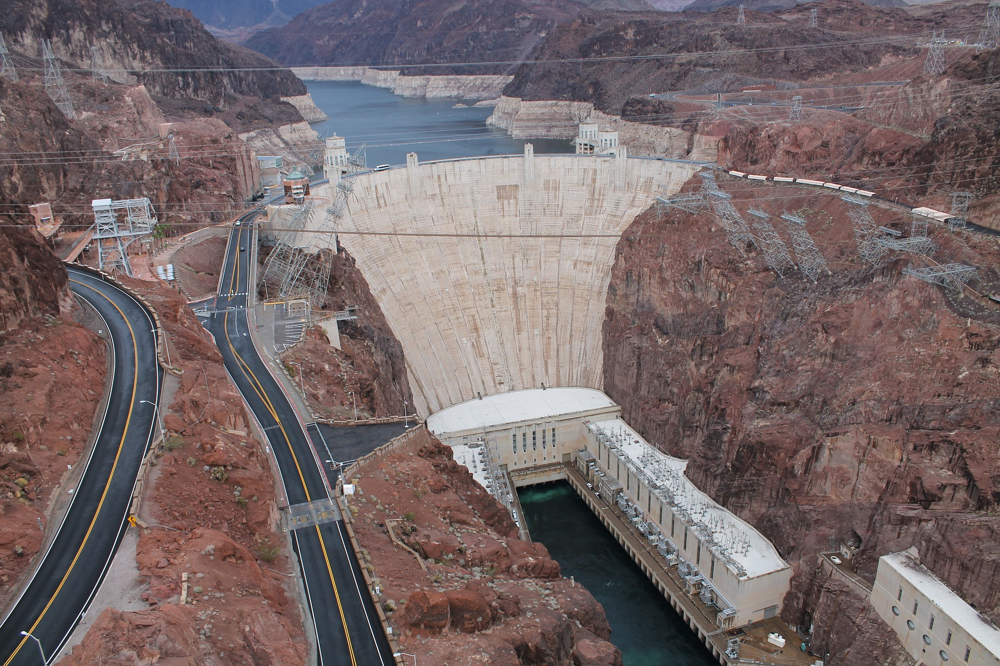
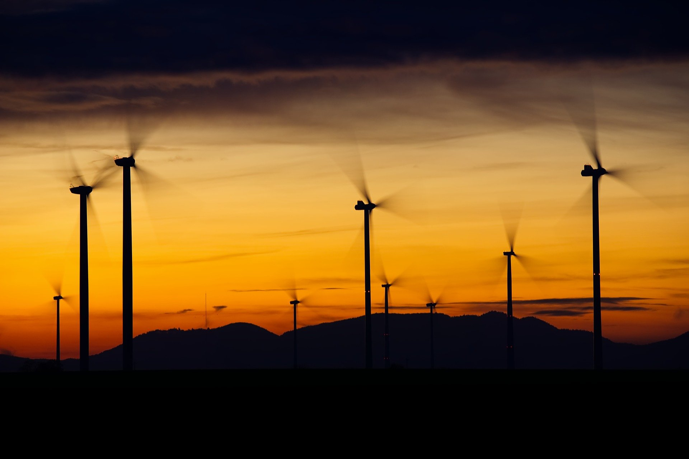

Solar power can be harnessed through the use of solar panels that cause photons to knock electrons loose from atoms, generating electricity. |
 |
Hydroelectric power is most commonly generated using dams that have turbines that rotate because of the flowing water. The turbines rotate an axel which is hooked up to the generator that creates the power. |
 |
Similarly to hydroelectric power, wind power is generated by a turbine turning an axel that is hooked to a generator. The difference of course is that as the name suggests, wind turbines use the wind instead of water. |
 |